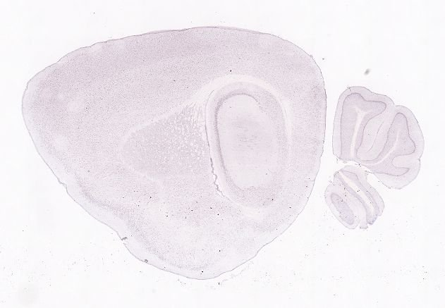
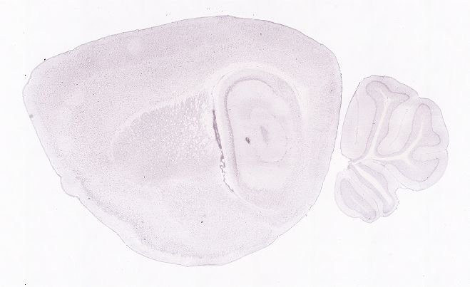
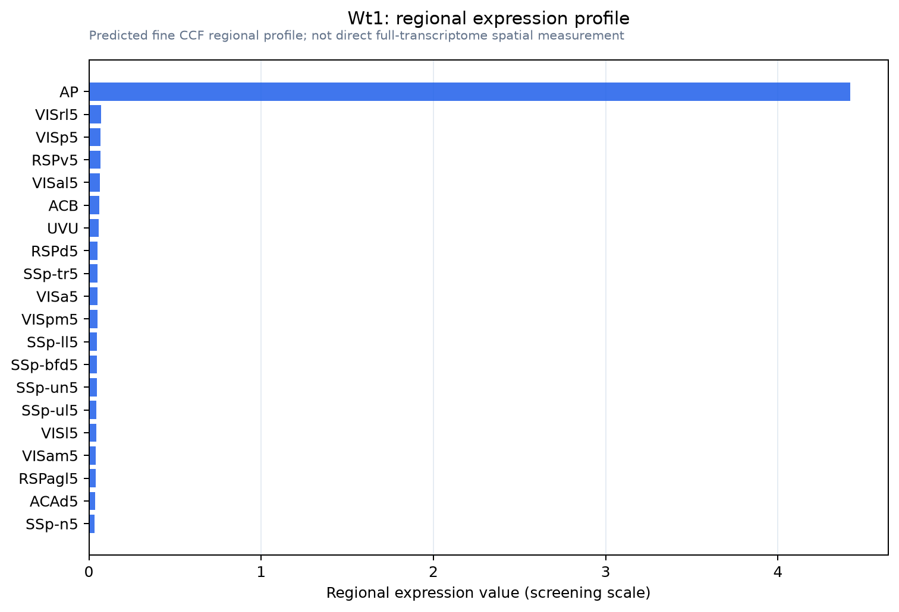
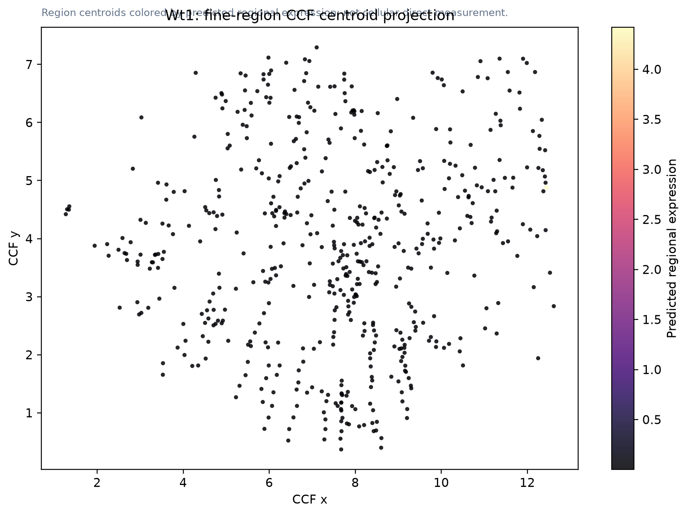

Wt1
Spatial tier: STRICT_EXCLUSIVE · Class: OTHER · Top region: AP (Area postrema) · Positive regions: 1/554
61.0Discovery Score
69.1Targetability Score
CEvidence grade C
What this means: Wt1: predicted fine-region profile is strict-exclusive, with 1 positive regions out of 554 (limit 12); direct spatial validation is required.
Direct spatial evidence
DIRECT ALLEN ISH

DIRECT ALLEN ISH

Regional expression figure

Predicted WMB × fine-CCF profile; not direct full-transcriptome spatial measurement.
CCF fine-region location

Region-centroid map colored by predicted expression; not a direct cellular expression image.
Spatial profile
Evidence and specificity
- Evidence status
- PREDICTED_FINE
- Direct sources
- None; predicted localization only
- Exclusive threshold
- 12 positive regions out of 554
- Spatial specificity
- 0.731
- Top-region fraction
- 0.739
- Filter status
- PASS
Interpretation limits
- Cell-type-to-region projection is imputed expression, not direct spatial measurement.
- Adult reference atlases do not establish stability across age, sex, strain, state, or disease.
- Transcript abundance does not guarantee protein abundance or genetic-tool performance.